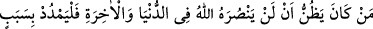
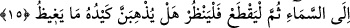

lâzımdır.
Şeyh Sa’dî velîleri şöyle vasfeder:
Ne hoştur Onun gamıyla perişan olmuşların hâli
İster yaralansınlar isterse O yaralarına merhem sürsün
Sürekli elem şarabını içerler
Acılık görseler de sükût ederler
Dostun yâdıyla olan sabır hiç acı gelmez
Sevgilinin eliyle sunduğu acı, şeker kesilir
2- Allah’a ibâdet eden kimse, melekler, insanlar ve cansız varlıklar vâsıtasıyla ya da
vâsıtasız olarak her fayda ve zarar kendisinden sâdır olan __WORD__/ed-Dârr (zarar veren) ve__WORD__/en-Nâfi’ (fayda veren)e ibâdet eder. Allah Teâlâ’dan başkasına ibâdet eden ise
fayda ve zarar veremeyen şeye ibâdet eder. Çünkü melek, insan, şeytan ya da felek veya
yıldız gibi diğer mahlûkât kendiliğinden bir hayra veya şerre, bir fayda veya zarara
muktedir olamaz. Bilakis bütün bunlar emre âmâde sebeplerdir. Onlardan ancak
kendilerine musahhar kılınan şeyler sâdır olur. Ezelî kudrete izâfetle onların hepsi
kâtibe izâfetle kalem gibidir. Allah Teâlâ’dan başka “O” ibâdet ve taleb ettiği, “ne kötü
bir yardımcı,” yakınlık kurduğu dünya ve şehvetleri “ne kötü bir dosttur!”
3- Mü’minlerden cennete girenler, sadece taklîdî îman ve zâhirî amellerle girmez.
Bilakis Allah onu inâyet kalemi ile kalbine yazdığı, hakîkî îmân ile oraya girdirir. Allah
Teâlâ’nın rızası için yapılan sâlih ve hâlis ameller de onun neticelerindendir.
15. Her kim, Allah’ın, dünya ve ahirette ona (Resûlüne) asla yardım
etmeyeceğini zannetmekte ise, (Allah ona yardım ettiğine göre) artık o kimse
tavana bir ip atsın; (boğazına geçirsin); sonra da (ayağını yerden) kessin! Şimdi bu
kimse baksın! Acaba, hilesi (bu yaptığı), öfke duyduğu şeyi (Allah’ın Peygamber’e
yardımını) gerçekten engelleyecek mi?
Allah hakkında kötü zanda bulunanlardan “Her kim, Allah’ın,” dînini yücelterek ve
düşmanlarını
kahrederek
“dünyada
ve”
derecesini
yükselterek,
kendisini
yalanlayanlardan intikam alarak “âhirette ona” yâni Muhammed (s.a.)’e “asla yardım
etmeyeceğini zannetmekte” vehmetmekte “ise...”
Yâni Allah Teâlâ Rasûlü’ne dünyada ve âhirette yardım eder. Düşmanlarından ve
O’na hased edenlerden her kim bunun tersini zannetmekte ve öfkesinden böyle olacağını